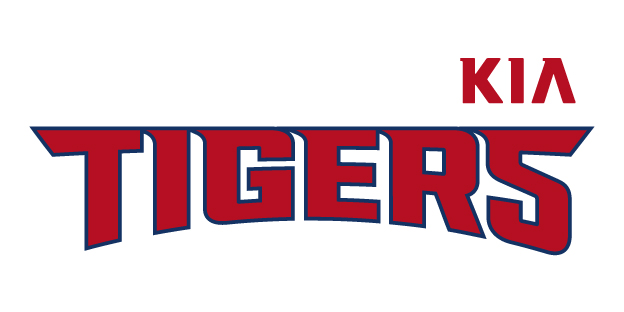

KIA Tigers?
Kia Tigers (Korean: KIA 타이거즈) is a South Korean professional baseball team founded in 1982 and based in the southwestern city of Gwangju. The Tigers are a members of the KBO League and are the most successful team in Korean baseball, having won the national Korean Series championship 11 times with a perfect 11–0 record.
history
After the success of the 1980s and 1990s, the fortunes of the team began to turn, resulting in them finishing bottom of the league for the first time in 2005, and again in 2007. In 2009, however, Kia Tigers won the 2009 KBO season and 2009 Korean Series.
Haitai Tigers was the third professional baseball team to be created in South Korea, after the OB Bears and MBC Chungyong. They were founded on January 30, 1982, with 14 players. Kim Dong-yeob, the first manager of the team, was fired after just one month, and Jo Chang-soo took over his position and led the team to a record of 38-42. Due to the lack of position players, many players in the league both pitched and batted. Kim Seong-han, for instance, had a record of ten wins and led the league in RBIs with 69 the first year.
In 1983, Haitai hired Kim Eung-ryong as manager, who had studied baseball in the United States (and had managed Haitai's amateur baseball team from 1964 to 1981). He eventually led the team to its first championship in 1983. The Tigers won the Korean Series 4–0–1 against MBC Chungyong. Although the team did not make it to the playoffs for the next two years, it set the foundation for the golden years to come by signing in future stars Lee Soon-chul, Sun Dong-yeol, and Kim Seong-han.
Under manager Kim Eung-ryong in the years 1986 to 1997, the Tigers won eight championships, never losing a Korean Series during that span. In 1986, the Tigers finished in second place in the pennant race with a team ERA of 2.86 and a batting average of .272, to go straight to the Korean Series against the Samsung Lions. They went on to win their second Korean Series 4-1.
